# mRemoteNG
https://mremoteng.org/ mRemoteNG is a remote connection manager for Windows.
It can store and manage a number of different connections, chief among them RDP,VNC, and SSH.
It's a popular tool among IT support people who have to remote into a lot of machines.
## Extract Passwords
mRemoteNG doesn't store passwords securely, so it's fairly trivial to extract passwords.
The config file, which holds all the connections and their passwords for mRemoteNG, is stored in:
C:\Users\<username>\AppData\Roaming\mRemoteNG\confCons.xmlLinks• Metasploit module
◇
https://github.com/rapid7/metasploit-framework/blob/master/modules/post/windows/gather/credentials/mremote.rb• Explanation by the author of the metasploit tool
◇
https://cosine-security.blogspot.com/2011/06/stealing-password-from-mremote.html• Alternative to metasploit exploit
◇
https://packetstormsecurity.com/files/126309/mRemoteOffPwdsDecrypt.rb.txt• Good tutorial on how to extract passwords - 3 methods - VERY USEFUL
◇
http://hackersvanguard.com/mremoteng-insecure-password-storage/Examples• hackthebox Bastion
### How-to (Example from hackthebox Bastion)
I used a windows 10 machine because windows 7 required .NET.
Download the portable version of the app, extract etc. -
https://mremoteng.org/downloadBoot mRemoteNG once, then close it.
Inside mRemoteNG's folder you'll see a confCons.xml file.
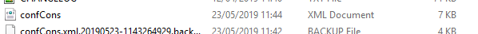It should look like this:
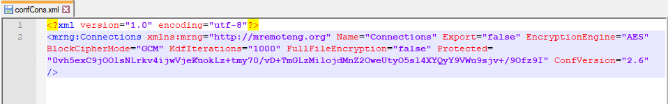(the
Protected value changes every time)
Open mRemoteNG and add a new connection with random junk data.
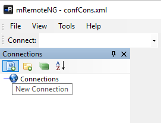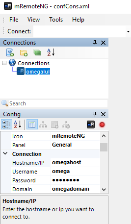Your confCons.xml file should now look like this, with your newly input connection configuration in it:
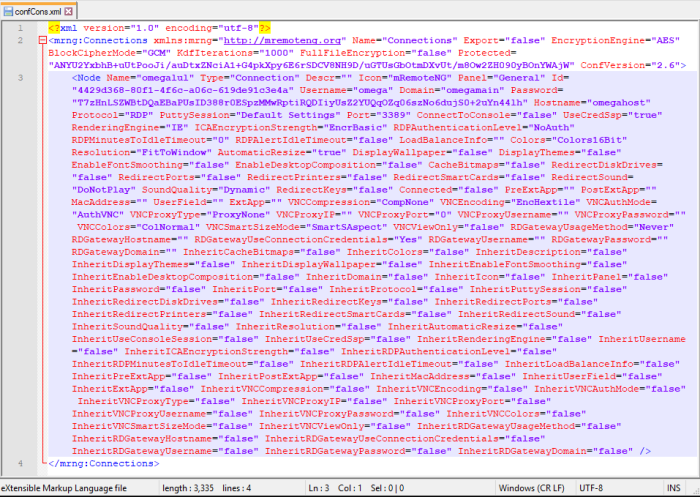Now you have the format of the xml file in which you can dump the mRemoteNG configurations from the Bastion box.
Close mRemoteNG.
Copy/paste the configurations (both the
<Node values) from Bastion's confCons.xml file:
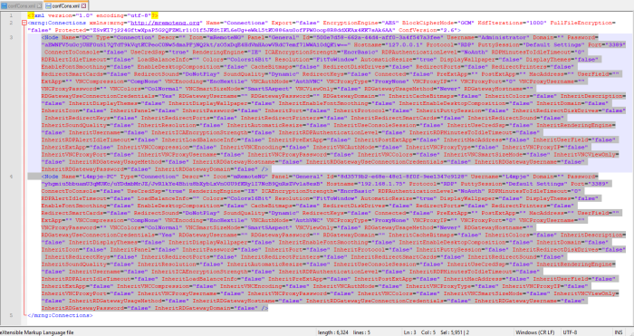into mRemoteNG's confCons.xml file and save it.
Open up mRemoteNG again and you should see 2 connections.
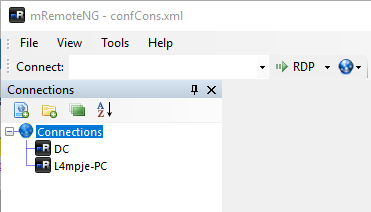Tools > External Tools
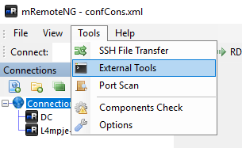Create a ‘tool’ to extract the password:
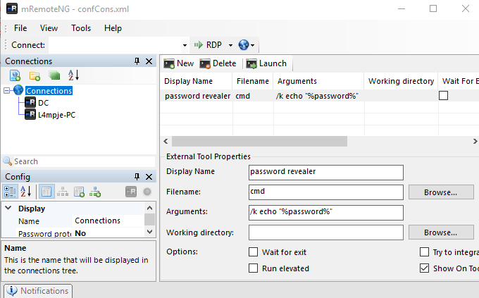If you've read the config file you'll notice that the
DC connection uses the username
Administrator, so try extracting the password from the DC config.
Right click DC > External Tools > password revealer
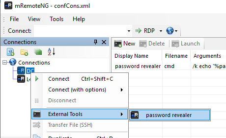And you'll get a password.
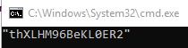